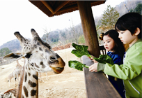

2013.05.23
200자 이내로 입력해주세요200자 이내로 입력해주세요200자 이내로 입력해주세요200자 이내로 입력해주세요200자 이내로 입력해주세요200자 이내로 입력해주세요

바바리양(Barbary sheep)은 주로 아프리카 북부의 건조하거나 반건조 지대의 바위산에 산답니다.
몸길이는 약 150cm까지 자라며, 수컷의 몸무게는 100kg이 넘고 암컷은 그 절반 정도의 무게가 나갑니다. 보통 3~6마리가 무리를 지어 살지만, 건기에는 약 20마리까지 무리의 수가 늘어나요. 한 무리에는 우두머리 수컷이 존재하구요.
바바리양은 물이나 나무가 별로 없는 건조지대에서도 잘 살 수 있도록 여러 가지의 특징을 가지고 있어요. 우선, 수분 섭취를 위해 식물이 수분을 많이 함유하고 이슬이 맺히는 새벽, 저녁, 밤에 주로 먹이를 섭취해요. 이러한 방법으로 건기에도 물을 마시지 않고 살아남을 수 있어요.